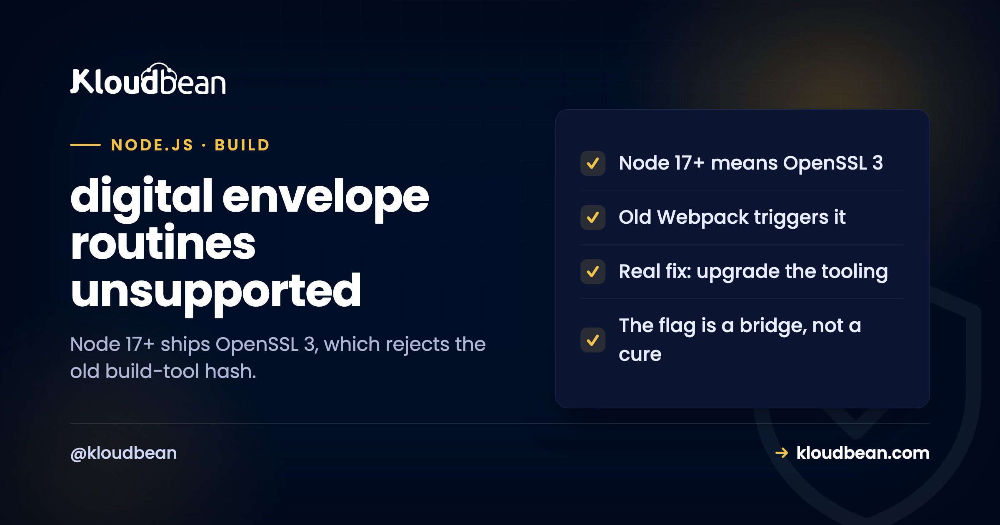

Fix: error:0308010C digital envelope routines unsupported (Node.js)

You pull a project onto a newer machine, or bump your Node version, run npm start or npm run build, and it dies with Error: error:0308010C:digital envelope routines::unsupported. Nothing in your code changed, which is what makes this one feel like a curse. It isn't. It's a predictable side effect of the Node version going up, and once you see the cause, you get to choose between a proper fix and a one-line workaround with clear eyes about the tradeoff.
It appears because Node 17 and newer ship OpenSSL 3.0, which refuses the outdated hashing algorithm that older build tools (Webpack 4, older react-scripts) relied on. The proper fix is to upgrade the build tooling to a version that uses a modern algorithm, for example react-scripts 5 or Webpack 5. If you can't upgrade right now, set NODE_OPTIONS=--openssl-legacy-provider as a temporary bridge. Downgrading Node back to 16 also stops the error, but Node 16 is end of life, so treat that as a last resort, not a fix.
What the error actually means
The message is cryptic, but it is pointing at cryptography, literally.
error:0308010C:digital envelope routines::unsupported is an OpenSSL error, surfaced through Node. Node 17 upgraded its bundled OpenSSL to version 3.0, and OpenSSL 3.0 disabled a set of older, weaker algorithms by default. One of those is an MD4-based hash that some build tools quietly used to generate internal identifiers, things like module hashes, not anything security-sensitive. When your build tool asks OpenSSL 3 for that old algorithm, OpenSSL says "unsupported," and the whole build falls over with this message. So the error is not about your application's security or your code at all. It is a build tool reaching for a hashing function that the newer crypto library no longer offers.
Why it appeared the moment you changed Node
This is the part worth internalising, because it tells you what really happened.
You almost always meet this error right after the Node major version went up: a new laptop with a current Node, a server on a newer version than your old one, a CI runner that updated, or a deliberate upgrade. Nothing in your project changed. The runtime under it did. That is the signature of a whole class of "works on my machine" problems, and it is exactly why keeping your Node version consistent across environments matters so much, which is the subject of Node.js version management. If your laptop is on Node 20 and your teammate is on 16, one of you sees this and the other doesn't, and you waste an afternoon before realising the runtime is the variable. Pin the version, and this error stops ambushing you.
Production counts as one of those environments, and it's the one people forget to pin because they can't see it. If your host decides the Node version for you, or bakes it into an image you don't control, you get to meet this error for the first time during a deploy. On Kloudbean the app's Node version is a setting in the console, editable without SSH, so the version running the build and the version you tested against can be made to match on purpose rather than by luck.
The real fix: update the build tooling
The clean answer treats the cause, not the symptom.
The tools that hit this (Webpack 4, react-scripts below 5, some older bundler setups) already fixed it in newer versions by switching to a modern hashing algorithm that OpenSSL 3 supports. So the durable fix is to upgrade them:
npm install react-scripts@latest
# or, if you use Webpack directly, move to Webpack 5Once your build tool is current, it stops asking for the retired algorithm, and the error disappears for good, on every Node version, with no environment flag to remember. This is worth doing rather than working around, because an old major version of your bundler is a source of other problems too, and you were going to have to move off it eventually. Treat the error as the nudge to do it now. If the upgrade turns out to be involved (a big Create React App project can be), use the workaround below to unblock yourself today and schedule the upgrade, rather than living on the flag forever.
The workaround, and why it is temporary
There is a one-line escape hatch, and it is fine as a bridge as long as you know what it is.
Setting an environment variable tells Node to re-enable the legacy OpenSSL provider, which brings back the old algorithm:
export NODE_OPTIONS=--openssl-legacy-providerOn Windows or in a cross-platform package.json script people often wire it in with cross-env. This works, and it is genuinely useful when you need the build running right now. But be honest with yourself about what it is: you are asking a modern crypto library to turn a deprecated feature back on so an outdated tool keeps working. It is a bridge, not a destination. The popular advice online stops at this flag, which is why so many projects are still carrying it years later. Set it if you must, then put "upgrade the bundler and delete this flag" on the list. The flag is the band-aid; updated tooling is the stitches.
One practical trap with the flag: it has to be present for the process that runs the build, not just for the app afterwards. Exporting it in your shell fixes your laptop and does nothing for a deploy, which is why the same project builds locally and fails in CI. Set it where the build actually runs. In the Kloudbean console that means adding NODE_OPTIONS to the app's environment variables so it's in place before the build step, and you'll see in the live build log whether it took effect. Same principle on any platform: the flag lives with the builder.
The fix to avoid: downgrading Node
One suggestion you'll see is worse than the problem, so here is the plain warning.
Rolling Node back to version 16 does make the error go away, because Node 16 used OpenSSL 1.1, which still had the old algorithm. But Node 16 is end of life, meaning no more security patches, so you would be trading a harmless build error for a runtime that no longer receives fixes. That is a bad trade on any server exposed to the internet. If you are tempted, use the --openssl-legacy-provider flag on a current, supported Node instead, which gets you the same working build without stranding yourself on an unsupported runtime. Choosing a version by "which one makes the error stop" is how projects drift onto end-of-life Node; choose a supported LTS and fix the tooling around it. The signature of a runtime that has aged out, by the way, is not a nice warning message. It's your package manager returning 404s and security advisories nobody will patch.
The durable fix isn't a command, it's pinning the runtime in three places
Every fix above is a thing you type once. The reason this error keeps coming back to teams is that nobody wrote the version down anywhere binding, so each machine and each deploy is free to pick its own. Fix that and the whole class of "worked yesterday, broke today, code unchanged" bugs gets much quieter. There are three places, and you need all three to agree.
# 1. .nvmrc, so anyone running `nvm use` lands on the right one
22
# 2. package.json, so an install on the wrong version complains
"engines": { "node": ">=22 <23" }
# 3. production: whatever your host uses to select the runtime
# (on Kloudbean, the app's Node version in the console)Miss the third one and you've pinned development while leaving production floating, which is the exact shape of this bug. That's the part a hosting choice actually decides: whether the production runtime is something you set and can see, or something you inherit. Kloudbean makes it an explicit setting alongside the app's environment variables, and deploys run from your Git repository with the build log streaming, so a version mismatch shows up in the log rather than as a mystery.
Now the part no host solves, ours included. Nothing about where you deploy upgrades Webpack 4 for you, removes the legacy flag from your package.json scripts, or decides that this quarter is the quarter you finally move off Create React App. A platform can make the runtime predictable. It can't make your build tooling current. That work stays on your side of the line, and postponing it just moves the same afternoon further into the future. For where to run Node overall, see the managed Node.js hosting guide.
Related reading
The root cause here is version drift, covered in Node.js version management. If your build fails a different way, why my app crashes on deploy and fixing cannot find module are the usual suspects. For a React build specifically, deploy a full-stack React app, and for where to host Node, the best managed Node.js hosting guide.
Build on the Node version you actually chose.
Kloudbean lets you set your app's Node version in the console and deploy from Git with live build logs, so the runtime under your build stops being a surprise. Managed, patched servers; free SSL; managed databases. Start at kloudbean.com, or compare options in the managed Node.js hosting guide.
Set your Node version · Git deploys with build logs · PM2 support · Managed, patched stack
FAQ
What causes error:0308010C digital envelope routines unsupported?
Node 17 and later bundle OpenSSL 3.0, which disables some older algorithms by default, including a legacy hash that older build tools used to generate internal identifiers. When a tool like Webpack 4 or an older react-scripts asks for that algorithm, OpenSSL 3 refuses and the build fails with this message. It is a build-tooling and Node-version issue, not a problem with your application code or its security.
How do I fix it properly?
Upgrade the build tooling to a version that uses a modern hashing algorithm, such as react-scripts 5 or Webpack 5. Once the tool no longer requests the retired algorithm, the error disappears on every Node version with no workaround needed. This is the durable fix because it removes the cause, whereas an environment flag only masks it and has to be carried forward indefinitely.
What does NODE_OPTIONS=--openssl-legacy-provider do?
It tells Node to re-enable OpenSSL's legacy provider, which restores the old algorithm the build tool wants, so the build succeeds again. It is a valid temporary workaround when you cannot upgrade the tooling immediately. Treat it as a bridge rather than a permanent fix, because you are asking a modern crypto library to turn a deprecated feature back on to keep outdated tooling working.
Should I downgrade Node to fix this?
Preferably not. Downgrading to Node 16 removes the error because that version used older OpenSSL, but Node 16 is end of life and no longer receives security patches, which is a poor trade for a harmless build error. If you need an immediate unblock, use the --openssl-legacy-provider flag on a current supported Node version instead, and plan to upgrade the build tooling.
Why did this start after I upgraded Node?
Because the error is triggered by the OpenSSL version that ships inside Node, and that changed in Node 17. Before then, the algorithm your build tool wanted was available; after, it is disabled by default. So a project that built fine suddenly fails purely because the runtime under it moved, which is the classic signature of a version-drift problem across machines or environments.
Is this error a security problem?
No. The algorithm involved was being used by build tooling to create non-security-sensitive identifiers like module hashes, not to protect your data. OpenSSL 3 disabling it by default is a general hardening decision, and your application's security is unaffected either way. The error is purely a compatibility mismatch between an old build tool and a newer crypto library.
How do I stop it happening across my team?
Pin your Node version so every machine and environment runs the same one, using the engines field in package.json and an .nvmrc file, and set the same version in production. Most people hit this error only because one machine upgraded Node while others did not. Consistent versions plus current build tooling removes both the trigger and the surprise. Node version management covers the pinning approach in detail.
Does managed hosting affect this error?
Indirectly, yes. On a managed platform like Kloudbean you set the Node version explicitly, so production matches the version you build and test against rather than an unpredictable default, which removes the version-mismatch surprise. It does not upgrade your bundler for you, that stays your responsibility, but it makes the runtime consistent so the error does not appear only in production.